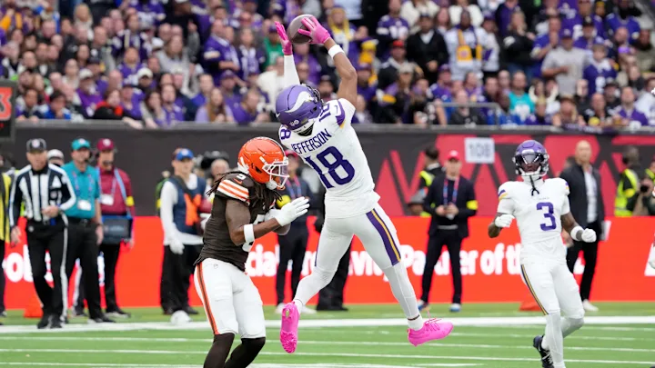

The Stats Behind the Griddy

Career Highlights
- Rookie Impact
- 1,400 receiving yards in first season
- Pro Bowl Selection
- Elite Dominance
- NFL Offensive Player of the Year (2022)
- League leader in receptions and yards